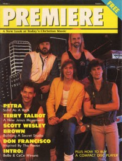

Premiere
1987
| Cover |
|---|
|  |
volume 1, issue 1
Cover Feature:Article:This is the first issue of Premiere.
volume 1, issue 2
Cover Feature:Article:| Cover |
|---|
 |
volume 1, issue 3
Cover Feature:Article:© 2011 CMnexus. Last updated May 2025. Contact: editor -AT- cmnexus -DØT- org